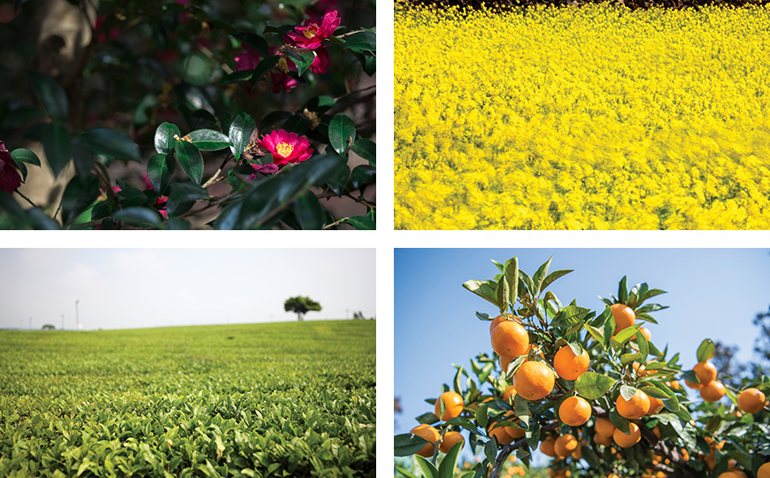

기획취재콘텐츠
- Home
- 제주라이프
- 기획취재콘텐츠
済州の化粧品原料産業 1部새로운 글


ユネスコが指定した清浄の島、済州にはおよそ9000種の生物が生育しているとされている。火山の噴出で生成された大地に芽生えた命は、済州の美しい自然の一部であると同時に未来戦略産業の中核資源として注目されている。国際的にも名高い韓国化粧品産業の根幹となる産業、それが済州の化粧品原料産業である。
K-ビューティーの成長とともに浮上した新しい課題
韓国の化粧品産業は、優れた技術力、強固な製造業生態系を基に、韓流ブームとともに急成長したK-ビューティーブランドを中心に比類のない人気と規模を誇っている。韓国コルマー、コスマックスなどはグローバル化粧品ODM、OEMで世界1、2位の製造メーカーであり、高品質製品の開発で世界市場の消費者を魅了している。アメリカのファッション雑誌WWDが選定した100大化粧品メーカーに韓国の化粧品市場を主導する大企業、アモーレパシフィック(12位)とLG生活健康(17位)がランクインしており、中堅企業のエイブルC&C、ハブアンドビーもそれぞれ68位と71位に入っている。それに、ミシャ、ザ・フェイスショップなどロードショップブランドのグローバル市場への進出も拡大し、ニッチ市場でグローバル消費者を惹きつけている。この20年間、韓国の化粧品市場の規模は年平均10%台の成長を維持し、2017年基準で世界市場8位規模の化粧品文化大国に成長した。

※ 出所：KOTRA独自総合(KOTRA、保健福祉部、食品医薬品安全処)、韓国保健産業振興院, Global Trade Atlas(2018. 06)
『韓国の化粧品産業市場はここ10年間引き続き成長傾向を維持している。』
韓国の市場規模の成長とともにグローバル輸出実績も毎年記録を更新している。韓国保健産業振興院が発表した2019化粧品産業分析報告書によると、2018年の化粧品輸出実績は62億7,678万ドルと前年比26.5%増加し、2004年の2億1,901万ドルに比べれば14年間で30倍近く成長した。輸出先も多様化した。K-ビューティーの品質と認知度が向上したことで従来の中華圏中心の輸出から米州、欧州など先進国市場への化粧品の輸出が持続的に増加した。韓国の化粧品産業の輸出は2013年に初めて黒字転換して以来、年平均40%台の成長率を記録し、2017年には代表的な輸出品目である半導体、自動車などとともに世界市場革新先導9分野にも選定された。
化粧品産業の規模の成長に伴い、化粧品原料産業の成長にも関心が集まっている。韓国の化粧品原料はまだほとんどが海外からの輸入である。そこで化粧品業界は化粧品原料の国産化という課題を抱えることになった。化粧品を購入する消費者もより賢くなっている。ブランドイメージで製品を選んでいた過去とは違い、化粧品に含まれている原料の一つ一つを詳細に確認して製品を選び始めたのである。天然原料が含まれた化粧品が人気を集め、化粧品原料の先進化は避けられない流れとなった。それに高齢化と大気汚染(環境汚染）は原料を重視する機能性化粧品市場の拡大へと繋がった。
済州の自然に根を下ろした生物の種、化粧品原料としての優秀性立証
済州産の化粧品原料が初めて注目されたのは2008年、アモーレパシフィックの化粧品ブランド、イニスフリーが西広茶園の緑茶抽出物で作った済州緑茶グリーンティーラインを発表してからだ。機能的にも優秀な自然原料の緑茶と清浄済州のイメージを生かしたブランドストーリーテリングを組み合わせ、済州緑茶グリーンティーラインは大きな人気を得た。その後、イニスフリーから発売された済州火山灰、グリーンティーシード、椿、菜の花蜂蜜など済州の自然原料を活用した化粧品ラインが相次いで人気を博し、済州の多様な生物原料に対する関心はさらに高まった。
済州は地理的に化粧品原料産業の拠点としてすばらしい環境を備えている。火山島という特殊な大地には陸上植物およそ2,000種が、四方を囲む海には海洋植物およそ700種が自生している。これは韓国で自生する全植物種の50%近い種が分布していることを意味し、面積に比べて多様な生物種を採取・研究することができ、生物資源を活用した事業の活性化に最適である。また、火山の噴出で生成された火山島済州では約60種の済州固有の特産種が報告されている。
- 済州は陸上から海に至るまで多様な生物資源の宝庫で、化粧品原料産業の最適地である。 -
済州テクノパーク生物種多様性研究所に登録された済州化粧品原料は321種（2019年基準）である。その中で国際化粧品原料集(International Cosmetic Ingredient Dictionary、以下、ICID)に登載された原料は全原料の85%に達する約270種だ。特に済州産の化粧品原料の原料名には「済州Jeju」という英文名が併記されているが、韓国で地域の名前でICIDに原料が登載されたのは済州が唯一だ。済州産原料の優秀性と特殊性が認められた結果である。済州産化粧品原料は椿、みかん、緑茶、菜の花など聞き慣れた清浄済州の特産物からハリグワ、コマツヨイグサなど珍しい名前の植物抽出物まで、その種類も多様である。

- 済州椿, 済州菜の花, 済州緑茶の木, 済州みかんの木 -
多様な生物資源の抽出物以外にも済州には化粧品の品質に大きな影響を及ぼす化粧品原料がある。それは化粧品のベースとなる材料、水だ。約50万年前に形成された地下420ｍの火山岩盤に存在する地下水は自然が作り出したきめ細かなフィルターでろ過された清浄水である。何重にも積もった堆積層と溶岩層でろ過された地下水はろ過過程で不純物が取り除かれ、弱アルカリ性で健康に有益なバナジウム、シリカなどのミネラル成分を含んでいる。また、地下水は火山岩盤の下に溜まっているため、汚染源が浸透しにくい環境で、クリーンな状態が維持されている。一方、溶岩海水は火山岩盤層によって自然にろ過されて陸地の地下にしみ込んだ海水である。ミネラルと栄養塩類が非常に豊富で有機物及び病原菌がほとんどない、済州にしかない独特の地下水資源であり、機能性飲料や化粧品に利用され、付加価値が高くなっている。
다음글